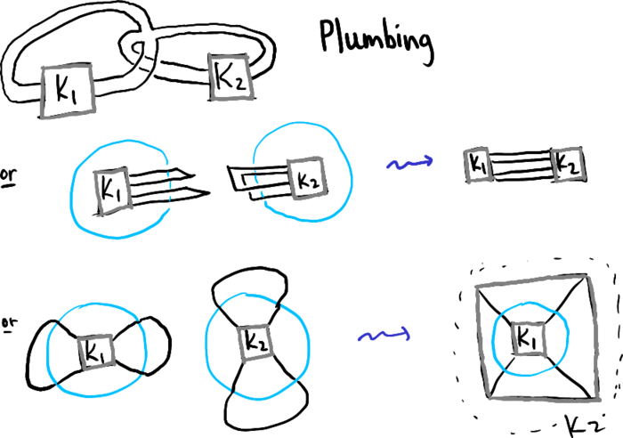
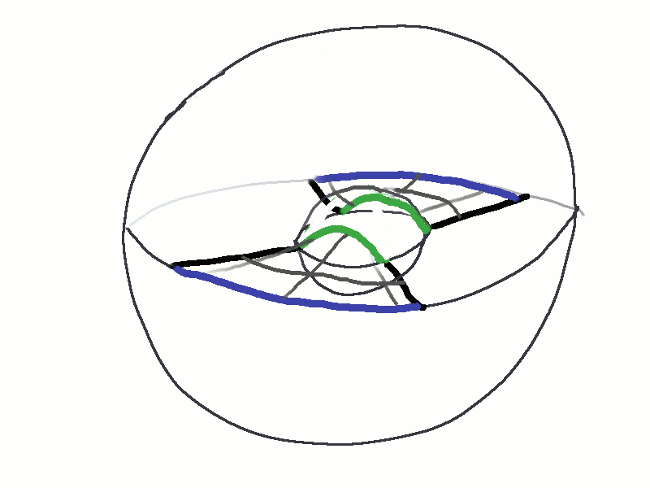

Fibered knot widget
The plumbing of two fibered knots yields a fibered knot. Stallings had an algebraic criterion, and Gabai created a geometric approach, but I was wondering if I could see fibration dynamically.
Plumbing can be understood as pasting together two 2-tangles created by cutting off a trivial 2-tangle from each of a pair of knots. The gluing is with a 90-degree twist, so to speak.

If you make the minimal-genus Seifert surface simple enough near where the cutting occured, then the fibration can be realized by plugging the following widget between the spheres:
